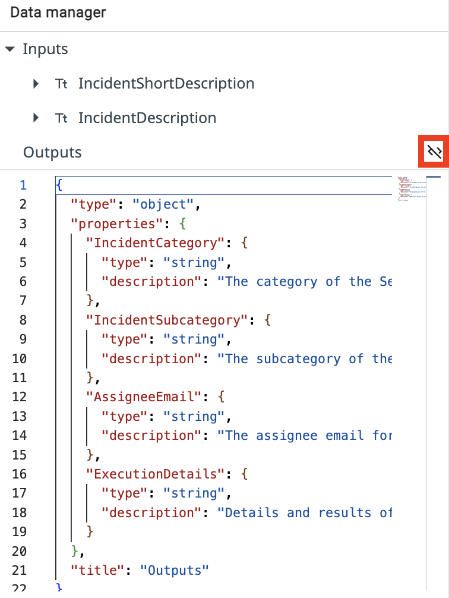
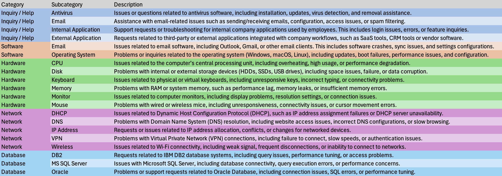
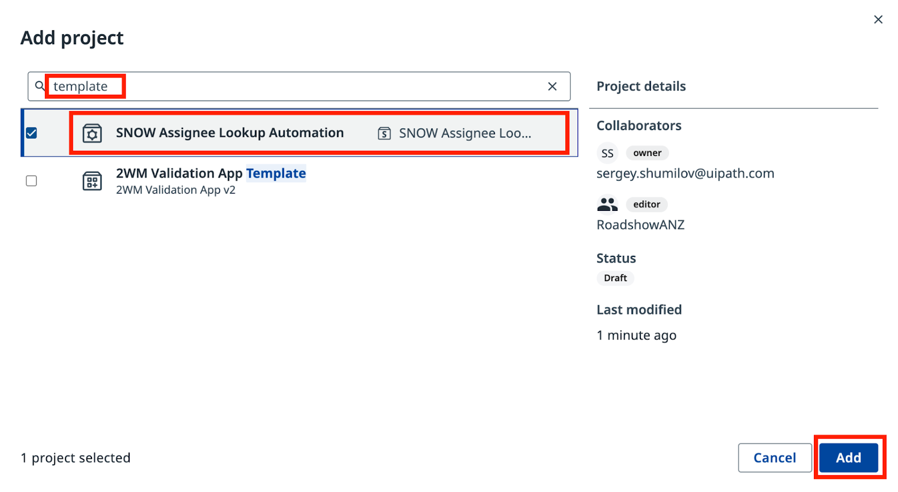
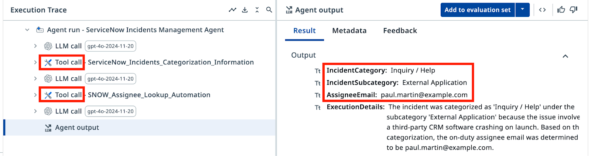

컨텍스트를 활용한 LLM¶
컨텍스트에 근거한 ServiceNow 인시던트 분류 에이전트 만들기
이번 레슨에서 할 일
- 입력·출력 인수를 갖춘 새 에이전트를 만들고 구성합니다
- 시스템 프롬프트와 사용자 프롬프트를 작성한 뒤, 샘플 인시던트로 에이전트를 테스트합니다
- 할루시네이션을 막기 위해 Context Grounding(컨텍스트 그라운딩)을 추가하고, Assignee Lookup 도구를 구성합니다
- Evaluations(평가)로 에이전트의 성능을 검증합니다
목표¶
Agent Builder에서 ServiceNow 인시던트 분류 에이전트를 만들고, 프롬프트를 구성하고, Context Grounding으로 에이전트를 실제 데이터에 근거시키는 방법을 배우고, 품질 보증과 신뢰성 테스트를 위한 Evaluations를 만듭니다.
Context Grounding의 동작 방식¶
그라운딩이 없으면 LLM은 그럴듯하게 들리지만 잘못된 카테고리–하위 카테고리 쌍, 즉 시스템에 존재하지 않는 조합을 만들어 낼 수 있습니다. Context Grounding은 에이전트를 실제 데이터 소스에 고정하므로, 모든 의사 결정이 컨텍스트의 유효한 항목으로 거슬러 올라갑니다.
에이전트가 인시던트를 분류할 때 데이터에 있는 실제 카테고리·하위 카테고리 조합을 참조하므로, 새로운 조합을 지어낼 위험이 사라집니다.
Evaluations 단계가 더해 주는 것¶
Evaluations를 사용하면 에이전트를 배포하기 전에 테스트 케이스 묶음을 실행해 볼 수 있습니다. 샘플 인시던트에 대한 기대 출력을 정의하고, 평가를 실행하고, 에이전트가 엣지 케이스 전반에서 얼마나 잘 동작하는지 측정합니다. 이는 일종의 회귀 테스트로, 프롬프트 변경이나 모델 업그레이드가 기존 기능을 망가뜨리지 않도록 도와줍니다.
단계¶
1. 에이전트 만들고 구성하기¶
Studio Web에서 새 Agent Solution을 만듭니다.

Autopilot
에이전트를 만들 때 Studio Web이 AI 어시스턴트인 Autopilot으로 솔루션을 자동 생성하자고 제안할 수 있습니다. 지금은 (여기서 하듯이) 제안을 닫고 직접 만들어도 되고, 나중에 연습 삼아 Autopilot을 실험해 봐도 좋습니다.
나중에 찾기 쉽도록 솔루션 이름을 바꿉니다. 예를 들면 다음과 같습니다.
-
Solution Name:
-
Agent Name:

인수
에이전트 인수는 다른 액티비티나 RPA 프로세스와 마찬가지로, 에이전트가 비즈니스 케이스에 대한 정보를 받아들이고 결과를 반환할 수 있게 해 줍니다. 덕분에 Orchestrator의 트리거에서 정보를 전달하거나, 한 에이전트의 출력으로 다른 자동화를 시작할 수 있습니다.
Data Manager 패널을 엽니다. 다음 Input Arguments(입력 인수)를 추가합니다. 타입은 String이어야 합니다.

다행히 JSON 편집기 모드로 전환한 뒤 아래 JSON 스키마를 붙여넣으면 한 번에 모두 가져올 수 있습니다.
{
"type": "object",
"properties": {
"IncidentCategory": {
"type": "string",
"description": "The category of the ServiceNow incident"
},
"IncidentSubcategory": {
"type": "string",
"description": "The subcategory of the ServiceNow incident"
},
"AssigneeEmail": {
"type": "string",
"description": "The assignee email for the ServiceNow incident"
},
"ExecutionDetails": {
"type": "string",
"description": "Details and results of classification"
}
},
"title": "Outputs"
}

2. 에이전트 프롬프트 구성하기¶
입력·출력 데이터를 정의했으니, 프롬프트를 작성하기 전에 System Prompt(시스템 프롬프트)와 User Prompt(사용자 프롬프트)의 차이부터 이해해 봅시다.
시스템 프롬프트는 에이전트의 역할과 능력을 정의하는 일관된 지침을 제공하고, 사용자 프롬프트는 에이전트의 주의를 특정 작업과 입력 매개변수로 향하게 합니다. 이 차이를 이해하는 것은 복잡한 작업을 수행하면서도 적절한 동작 범위를 지키는 AI 에이전트를 설계하고 구현하는 데 필수적입니다.
시스템 프롬프트
시스템 프롬프트에서는 에이전트의 역할, 목표, 제약을 자연어로 설명합니다. 에이전트가 따라야 할 규칙과, 특정 도구·에스컬레이션·컨텍스트를 언제 사용하면 좋을지에 대한 정보를 지정합니다.
사용자 프롬프트
사용자 프롬프트에서는 입력/인수를 에이전트에 전달하는 방식을 구조화합니다. 시스템 프롬프트에서 특정 입력을 어떻게 지칭할지도 사용자 프롬프트에서 보여 줄 수 있습니다.
You are a ServiceNow Incidents categorization agent, an AI assistant tasked with managing newly created ServiceNow incidents. Your primary responsibility is to analyze incident details and determine the correct Category, Subcategory, and Assignee email address for each incident.
# Categorize the incident
- Determine the Incident Category and Subcategory based on Description and Short Description.
- Once categories have been established, determine the on-duty Assignee email address who handles this type of requests.
# Summarize the actions taken.
In the ExecutionDetails, provide:
- Incident Category
- Incident Subcategory
- Assignee Email
- Reasoning for your decisions
Analyze and categorize the following ServiceNow incident:
Incident Short Description: {{input.IncidentShortDescription}}
Incident Description: {{input.IncidentDescription}}
Determine the appropriate category, subcategory, and assignee email for this incident based on the provided information.
그라운딩 없이 에이전트가 어떻게 동작하는지 관찰하기 위해, 아래 샘플 인시던트 정보로 테스트해 봅시다. 에이전트를 실행하고 다음 입력 인수를 제공하세요.
Every time I try to open the CRM software, it crashes immediately. I've already tried reinstalling it.
출력 패널에서 에이전트가 LLM에 요청을 보내고 응답을 받는 모습을 볼 수 있습니다. 그런데 에이전트는 카테고리 이름과 담당자 이메일 주소를 어떻게 정하는 걸까요?
컨텍스트 그라운딩이 없으면 에이전트는 자신만만하지만 부정확한 카테고리와 담당자 정보 — 시스템에 실제로 존재하지 않는 카테고리 — 를 반환할 수 있습니다. 이것이 바로 할루시네이션 문제입니다.
응답을 실제 카테고리에 근거시키고 당직 전문가의 이메일을 조회하기 위해, 두 가지를 추가합니다.
- Context Grounding
- Assignee Lookup 자동화
3. 컨텍스트 그라운딩 추가하기¶
Context Grounding은 에이전트에 구조화된 데이터 소스를 제공합니다. 이 컨텍스트의 이름은 ServiceNow Incidents Categorization Information이며, 우리 교육용 조직에서 사용하는 유효한 Category–Subcategory 쌍을 담고 있습니다. 사용 가능한 카테고리와 하위 카테고리를 각각의 간단한 설명과 함께 나열합니다.

이제 에이전트는 어떤 티켓이 들어와도 분류할 수 있는 구조화된 데이터를 갖게 됩니다. 에이전트 구성의 Contexts 섹션에서 Add context(컨텍스트 추가)를 클릭합니다.
Canvas 모드라면 Contexts 옆의 "+" 버튼을 사용하세요.

ServiceNow Incidents 폴더 아래의 사용 가능한 리소스에서 ServiceNow Incidents Categorization Information을 선택하고, 다음 설명과 함께 추가합니다.
4. 담당자 조회 도구 추가하기¶
이제 SNOW Assignee Lookup Automation 프로젝트를 가져옵니다.
Explorer에서 + 버튼을 클릭한 다음 Import existing(기존 항목 가져오기)을 선택해 솔루션에 추가합니다.

"SNOW Assignee"를 검색하고 SNOW Assignee Lookup Automation을 선택합니다.

이 자동화를 에이전트의 도구로 추가합니다. Tools 섹션에서 Add tool(도구 추가)을 클릭한 다음 RPA workflow를 선택합니다.

현재 솔루션에서 사용 가능한 워크플로 목록에서 SNOW Assignee Lookup Automation을 선택합니다.

에이전트가 언제 이 도구를 사용할지 알 수 있도록 설명을 추가합니다.
5. 시스템 프롬프트 업데이트하기¶
변경 사항 확인
새 도구 사용을 반영하기 위해 프롬프트에 적용해야 하는 변경 사항입니다. 꼼꼼히 확인하세요.
--- Original
+++ With Context and tools
# Categorize the incident.
-- Determine the Incident Category and Subcategory based on Description and Short Description.
+- Determine the Incident Category and Subcategory based on Description and Short Description from Categorization Information Context.
+- Context contains table with only possible Category-Subcategory pairs. Do not mix Category-Subcategory pairs if specific pair is not present in the context. Do not generate new categories if they are not present in the context.
+- Pick the Category-Subcategory pair that aligns well with Incident Descriptions. If you are not sure or no category pair is a clear match, return "Unknown" as category.
-# Once categories have been established, determine the on-duty Assignee email address who handles this type of requests.
+# Once categories have been established, determine the on-duty Assignee email address who handles this type of requests by calling Assignee Lookup automation.
# Summarize the actions taken.
In the ExecutionDetails, provide:
- Incident Category
- Incident Subcategory
- Assignee Email
- Reasoning for your decisions
You are a ServiceNow Incidents categorization agent, an AI assistant tasked with managing newly created ServiceNow incidents. Your primary responsibility is to analyze incident details and determine the correct Category, Subcategory, and Assignee email address for each incident.
# Categorize the incident
- Determine the Incident Category and Subcategory based on Description and Short Description from Categorization Information Context.
- Context contains table with only possible Category-Subcategory pairs. Do not mix Category-Subcategory pairs if specific pair is not present in the context. Do not generate new categories if they are not present in the context.
- Pick the Category-Subcategory pair that aligns well with Incident Descriptions. If you are not sure or no category pair is a clear match, return "Unknown" as category..
- Once categories have been established, determine the on-duty Assignee email address who handles this type of requests by calling Assignee Lookup automation.
# Summarize the actions taken.
In the ExecutionDetails, provide:
- Incident Category
- Incident Subcategory
- Assignee Email
- Reasoning for your decisions
같은 CRM 크래시 샘플 인시던트로 에이전트를 다시 테스트합니다. 이제 Execution Trace(실행 추적)에서 다음을 관찰하세요.
- 인시던트를 분석하기 위한 에이전트의 LLM 호출
- Context Grounding 데이터를 조회하는 에이전트
- Assignee Lookup 도구를 호출하는 에이전트
- Result 탭의 최종 분류 결과

이제 출력에는 유효한 카테고리와 조회 도구에서 가져온 담당자 이메일만 표시됩니다. 할루시네이션은 없습니다. 축하합니다!
6. Evaluations로 테스트하기¶
Evaluations는 미리 정의된 입력 세트에 대해 결과를 자동으로 검증하는 일종의 회귀 테스트입니다. 지금은 평가 세트를 실행해 에이전트가 여덟 가지 시나리오를 모두 올바르게 처리하는지 확인합니다. Evaluations는 다음 단계에서 더 자세히 살펴봅니다.
Evaluation sets 탭으로 이동해 Import(가져오기)를 클릭합니다.
평가 세트
아래 JSON을 텍스트 필드에 붙여넣으세요. 가져오기가 끝나면 여러 개의 평가가 보일 것입니다.
{
"fileName": "evaluation-set-1761459564848.json",
"id": "18c3387f-00ed-4deb-b4e8-886f1164f517",
"name": "SNOW Categorization Evaluation",
"batchSize": 10,
"evaluatorRefs": [
"33c47b32-563b-4d16-b323-11e187f954be"
],
"evaluations": [
{
"id": "811adc0e-aff0-434f-99fa-f32ed562bf1d",
"name": "Database_MSSQL",
"inputs": {
"IncidentShortDescription": "Database connection issue from RPA automations",
"IncidentDescription": "I'm building an RPA workflow that connects to production instance of Microsoft SQL Server and it fails with error \"IP Address not authorized to perform this query\". Could you authorize my IP address: 123.23.41.165"
},
"expectedOutput": {
"IncidentCategory": "Database",
"IncidentSubcategory": "MS SQL Server",
"AssigneeEmail": "bud.richman@example.com",
"ExecutionDetails": ""
}
},
{
"id": "789d90ad-fca8-44f3-8179-d1ca95317a1f",
"name": "Software_Email",
"inputs": {
"IncidentShortDescription": "I can't send emails to external addresses",
"IncidentDescription": "I can receive emails just fine, but every time I try to send one to anyone outside the company domain, it fails. I'm not sure if it's an issue with my email client or something on the server side. Could you assist me with this?"
},
"expectedOutput": {
"IncidentCategory": "Software",
"IncidentSubcategory": "Email",
"AssigneeEmail": "savannah.kesich@example.com",
"ExecutionDetails": ""
}
},
{
"id": "97bc068e-8394-40c8-ad31-e0832e93f697",
"name": "Inquiry_Antivirus",
"inputs": {
"IncidentShortDescription": "Laptop slowing down",
"IncidentDescription": "I noticed my laptop is slowing down every time a security scan starts running, can you please look into this?"
},
"expectedOutput": {
"IncidentCategory": "Inquiry / Help",
"IncidentSubcategory": "Antivirus",
"AssigneeEmail": "paul.martin@example.com",
"ExecutionDetails": ""
}
},
{
"id": "754cf068-5e59-4436-8733-f92ebca7fa55",
"name": "Inquiry_ExternalApplication",
"inputs": {
"IncidentShortDescription": "CRM software crashes on launch",
"IncidentDescription": "Every time I try to open the CRM software, it crashes immediately. I've already tried reinstalling it."
},
"expectedOutput": {
"IncidentCategory": "Inquiry / Help",
"IncidentSubcategory": "External Application",
"AssigneeEmail": "paul.martin@example.com",
"ExecutionDetails": ""
}
},
{
"id": "adc73bed-75e6-45b3-801c-5919df70ec6d",
"name": "Hardware_Monitor",
"inputs": {
"IncidentShortDescription": "Display flickers occasionally",
"IncidentDescription": "My screen flickers randomly throughout the day. It's not completely unusable, but it's very distracting."
},
"expectedOutput": {
"IncidentCategory": "Hardware",
"IncidentSubcategory": "Monitor",
"AssigneeEmail": "aqib.mushtaq@example.com",
"ExecutionDetails": ""
}
},
{
"id": "3d139ef0-05df-488c-b56f-4165258900dc",
"name": "Network_DNS",
"inputs": {
"IncidentShortDescription": "System cannot reach certain websites",
"IncidentDescription": "Some websites are not loading on my system, but they work fine on my phone. I suspect there's an issue with my network settings."
},
"expectedOutput": {
"IncidentCategory": "Network",
"IncidentSubcategory": "DNS",
"AssigneeEmail": "david.dan@example.com",
"ExecutionDetails": ""
}
},
{
"id": "9c7e9e2a-8e3f-453d-894d-d5ba12a80932",
"name": "Network_VPN",
"inputs": {
"IncidentShortDescription": "VPN connection drops frequently",
"IncidentDescription": "My VPN keeps disconnecting randomly, making it hard for me to work remotely."
},
"expectedOutput": {
"IncidentCategory": "Network",
"IncidentSubcategory": "VPN",
"AssigneeEmail": "bud.richman@example.com",
"ExecutionDetails": ""
}
},
{
"id": "3d114888-f0b0-400b-82f3-ed20aa300df3",
"name": "Software_OS",
"inputs": {
"IncidentShortDescription": "Windows update failure",
"IncidentDescription": "I tried to install the latest Windows update, but it keeps failing with error code 0x80070002"
},
"expectedOutput": {
"IncidentCategory": "Software",
"IncidentSubcategory": "Operating System",
"AssigneeEmail": "savannah.kesich@example.com",
"ExecutionDetails": ""
}
}
],
"modelSettings": [],
"createdAt": "2025-10-26T06:19:24.848Z",
"updatedAt": "2025-10-26T06:19:24.848Z"
}

Evaluate set을 클릭하고 결과를 검토합니다. 각 테스트 케이스는 에이전트를 한 번씩 실행하며, 출력이 기대 값과 일치하는지 확인할 수 있습니다. Evaluations는 프롬프트를 수정하거나 모델을 바꿀 때 품질을 유지하고 회귀를 잡아내도록 도와줍니다. 한 가지 문제를 해결하려고 프롬프트를 조정했다가 다른 유스 케이스가 망가지는 일을 막아 주는 것이죠.
에이전트의 분류 로직이 준비되었습니다. 다음 단계에서는 에이전트를 ServiceNow에 연결합니다.